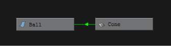
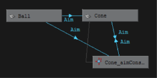
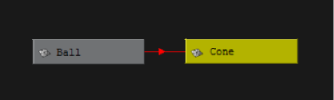

在“Hypergraph”中的任意位置按住 Shift + 单击鼠标右键，从以下选项中进行选择。
-
显示所有连接(Show all Connections)
- 显示场景层次中到/自每个节点的连接。
-
显示来自选定对象的连接(Show from Selected)
- 显示来自选定节点的连接。
-
显示指向选定对象的连接(Show to Selected)
- 显示到选定节点的连接。
-
显示指向/来自选定对象的连接(Show to/from Selected)
- 显示指向和来自选定节点的连接。
-
切换连接标签(Toggle Connection Label)
- 切换约束连接的标签。启用时，标签将显示在每条连接线上方。请参见在 Hypergraph 中显示连接。
-
变形器连接(Deformer Connections)
-
启用时，将在由约束连接的两个节点之间显示绿色线。箭头表示连接方向。

-
约束连接(Constraint Connections)
-
启用时，将在由约束连接的两个节点之间显示蓝色线。箭头表示连接方向。

-
表达式连接(Expression Connections)
-
启用时，将在由表达式连接的两个节点之间显示红色线。箭头表示连接方向。
